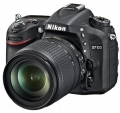

器材库 > APS及其以下画幅可换镜头数码相机 > D7100

规格总览
产品类型
APS画幅可换镜头数码相机
发布日期
2013-02-21
厂家推荐价格
180,000.00 （日元）
影像规格
影像传感器
CMOS
影像传感器尺寸
23.5 × 15.6mm
总像素
2469万
有效像素
2410万
影像处理器
EXPEED 3
色彩滤镜
RGB原色彩色滤镜
低通滤镜
无
色彩空间
Adobe RGB/SRGB
最大解像度
6000×4000
静态图像尺寸
6000×4000(L) 4494×3000(M) 2992×2000(S)；1.3×（18×12）4800×3200(L) 3600×2400(M) 2400×1600(S)
静态图像格式
JPEG, RAW, RAW+JPEG
静态图像质量
精细，标准，基本
画幅比
3:2
短片尺寸
1920 x 1080; 60i（59.94场/秒)/ 50i（50场/秒）* 1920 x 1080；30 p（逐行）、25p、24p 1280 x 720；60p、50p，60p、50p、30p、25p和24p的实际帧率分别为每秒59.94、50、29.97、25和23.976帧
短片格式
MPEG4-AVC/H.264
短片音效
线性PCM
除尘系统
清洁图像传感器、图像除尘参考数据（需要另购的Capture NX 2 软件）
镜头和对焦
镜头卡口
Nikon F
对焦系统类型
TTL相位检测
对焦点
可从51 或11 个对焦点中选择
对焦模式
单点AF；动态区域AF（9、21或51个对焦点）、3D跟踪、自动区域AF
自动对焦点选择
自动, 手动
AF辅助灯
有
手动对焦
支持
曝光控制
测光系统
使用2016区RGB感应器的TTL曝光测光
测光模式
中央重点测光, 点测光
测光范围
矩阵测光或中央重点测光：0-20EV~点测光：2-20EV
曝光模式
Auto, P（程序自动曝光）, A（光圈优先自动曝光）, S（快门速度优先自动曝光）, M（手动测光曝光）
场景模式
夜景, 海景及雪地, 食物, 儿童, 宠物, 烛光, 日落, 人像, 风景, 运动, 夜间人像, 鲜花, 近摄, 宴会/室内, 黄昏/黎明, 秋色
快门类型
电子控制纵走式金属快门
快门速度
1/8000-30 秒（以 1/3、1/2 或 1EV 为步长进行微调）、B 门、X250
曝光补偿
±5EV以1/3或1/2或1EV级调整
自动曝光锁
有
自动包围曝光
0.3，0.7，1.0，1.3，1.7，或 2.0 EV定级调校的 2 至 3 次曝光
ISO感光度
100, 200, 400, 800, 1600, 3200, 6400, 自动, 可扩展至25600
白平衡
白炽灯, 闪光灯, 色温调节, 阴天, 荧光灯, 自定义, 阴影, 自动, 预设白平衡, 晴天
自拍
10秒, 2秒, 5秒, 20秒
连拍
普通时：6张/秒；1.3x时：7张/秒
闪光灯
内置闪光灯
弹出式
闪光模式
自动, 减轻/消除红眼, 填充式闪光, 高速同步, 补充闪光, 减轻红眼慢速同步, 红眼修复
闪光指数
GN 12 (ISO 100)
闪光补偿
-3 至 +1EV以1/3 或1/2EVEV级调整
闪光同步模式
后帘同步, 慢速同步
外接闪光灯
SB系列闪光灯
取景器/显示屏
取景器
眼平五棱取景器
取景范围
100%
取景放大倍率
0.94倍
屈光度调节范围
–1.0m–1（50mm f/1.4 镜头设为无穷远）
反光镜
快速瞬回半透明
景深预视
有
LCD类型
OLED LCD
LCD尺寸
3.2英寸
LCD像素
122.9万
视野率
100%
Live View
有
文件输入/输出
存储卡
SD/SDHC, SDXC
数据接口
高速USB
视频/音频接口
HDMI Mini 输出
扩充系统端子
无线遥控器：WR-1 和WR-R10 （另购）；遥控线：MC-DC2 （另购）；GPS 单元：GP-1 （另购）
电源
电池
EN-EL15 锂离子可充电电池
续航能力
约950张
外接电源
EH-5b 电源适配器；需要EP-5B 照相机电源连接器（另购）
机身规格
材质
外壳采用镁合金
颜色
黑色
尺寸
135.5 × 106.5 × 76mm
重量
675g
其它
配件端口
遥控线, GPS装置, 热靴, 快门线, 外接附件接口, 外接电源插孔, 脚架螺丝孔
支持语言
中文（简体）, 中文（繁体）, 英语, 日语, 捷克语, 丹麦语, 荷兰语, 芬兰语, 德语, 印度尼西亚语, 意大利语, 韩语, 挪威语, 波兰语, 葡萄牙语, 俄语, 西班牙语, 瑞典语, 土耳其语, 匈牙利语, 阿拉伯语, 波斯语, 希腊语, 乌克兰语, 罗马尼亚语, 印地语, 越南语
工作温度
0 ℃至40 ℃℃
工作湿度
85%或以下（不结露）%
附件
EN-EL15可充电锂电池（含终端盖）、MH-25电池变压器、DK-5目镜盖、AN-DC1带、UC-E17 USB线、BS-1配件热靴盖、DK-23橡胶眼罩、BF-1B机身盖、ViewNX 2 CD、用户手册
wingszero2014-08-06 14:154.94 分
操作性 4.50功能性 5.00美观性 5.00趣味性 5.00耐用性 5.00性价比 5.00解像力 5.00色彩还原 5.00
htabc2014-07-22 10:234.88 分
操作性 5.00功能性 5.00美观性 5.00趣味性 5.00耐用性 5.00性价比 4.50解像力 4.50色彩还原 5.00
吉哥2014-06-18 20:54
sos562014-06-03 10:373.63 分
操作性 4.00功能性 4.00美观性 4.00趣味性 4.00耐用性 4.00性价比 3.00解像力 4.00色彩还原 2.00
wolfgroup2014-04-23 21:134.81 分
操作性 5.00功能性 5.00美观性 4.50趣味性 4.50耐用性 4.50性价比 5.00解像力 5.00色彩还原 5.00
chronos2014-04-06 00:484.63 分
操作性 5.00功能性 4.50美观性 5.00趣味性 4.50耐用性 4.50性价比 3.50解像力 5.00色彩还原 5.00
沙河客2014-03-12 22:164.5 分
操作性 4.50功能性 4.50美观性 4.50趣味性 4.00耐用性 5.00性价比 4.50解像力 4.50色彩还原 4.50
各种浪2013-09-13 20:344.69 分
操作性 5.00功能性 5.00美观性 4.50趣味性 5.00耐用性 5.00性价比 4.00解像力 4.50色彩还原 4.50
林岐2013-09-03 17:534.81 分
操作性 5.00功能性 5.00美观性 5.00趣味性 5.00耐用性 5.00性价比 3.50解像力 5.00色彩还原 5.00
opue1112013-05-14 11:494.75 分
操作性 5.00功能性 5.00美观性 4.50趣味性 4.50耐用性 5.00性价比 4.00解像力 5.00色彩还原 5.00
浩色之图2013-04-07 11:084.63 分
操作性 4.50功能性 4.50美观性 4.50趣味性 4.00耐用性 5.00性价比 4.50解像力 5.00色彩还原 5.00
莲花山椰子2013-03-18 13:234.56 分
操作性 4.00功能性 5.00美观性 4.50趣味性 5.00耐用性 4.50性价比 4.00解像力 5.00色彩还原 4.50
若农2013-02-22 09:244.63 分
操作性 4.50功能性 5.00美观性 4.50趣味性 5.00耐用性 4.50性价比 4.00解像力 5.00色彩还原 4.50
产品图 / 样片
评测 / 相关文章
- 详细内容 （存档）
- 注重内在修为 尼康D7100详细评测 （存档）
- ［资讯］5款尼康产品获得“2013最佳设计大奖” （存档）
- ［资讯］尼康数码单反汇总 － 截至2013年5月 （存档）
- ［资讯］尼康D7100荣获EISA（欧洲影音协会）大奖 （存档）
- ［资讯］EISA 2013-2014年度影音设备大奖 （存档）
- ［资讯］尼康参展第十五届上海国际摄影器材展览会 （存档）
- ［资讯］尼康D7100最新固件 Ver.1.01 （存档）
- ［试用］你是我的眼—用尼康的坚硬记录生活的柔软 （存档）
- ［资讯］TIPA Award 2013 揭晓 （存档）
- ［资讯］DxOMark公布尼康D7100测试成绩 （存档）